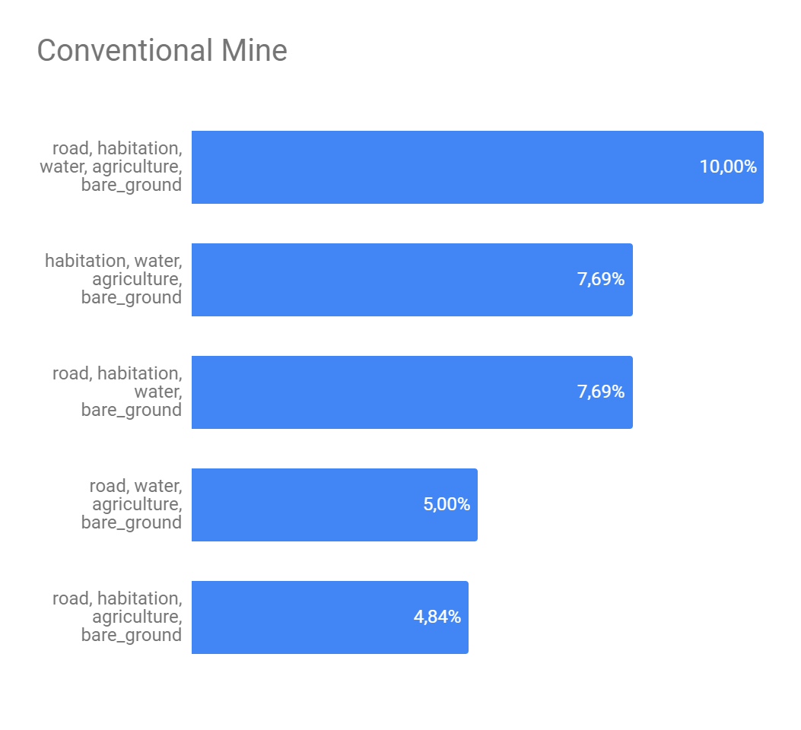

The problem consists in classify Amazonia satellite imagery in labels of weather conditions and land use patterns. It was taken from kaggle which, in partnership with Plannet, made available more than 40,000 classified images and more than 60,000 images to a blind test. The images were divided in chips, i.e instead of use an image with 6600×2200 pixels - representing 19877.88 hectares - we are using chips with 256×256 pixels - representing 89.7187 hectares. Each chip should be classified on one of 4 labels about weatherconditions and none or more of 13 labels about land use patterns. Figure 1 shows some examples of this classifications. The chips can be classified with none labels about land use patterns if the weather conditions cover the camera, as in case of 1st chip in Figure 1, the weather condition is "cloudy" and it doesn't allow us to se the land use patterns. The possible classifications are:
weather conditions: clear - when the sky is without any pertubation; cloudy; partly cloudy and haze
Land use Patterns: primary - when the image shows primary forest; agriculture; cultivation - which is like a familiar agriculture; road; water; habitation; bare ground; selective logging; artisinal mine; blooming; slash and burn; blow down and conventional mine.
Figure 1 - Chips and their labels

Source: Kaggle
The 17 labels aren't well distributed, Figure 2 shows the discrepancy among labels quantity. While 'primary' has appered in almost every image in our image set, labels such as 'artisinal mine', 'blooming', 'slash and burn', 'blow down' and 'conventional mine' when added together don't even represent 5% of image labels, because of this from now on I will call them 'interest classes'.
Figure 2 - Labels distribution

Source: Own autorship
Due to the low number of our interest classes a search for something that could compensate it became necessary. Figure 3 shows the correlation between labels, i.e the percentile of images labeled on X class that also have the label Y. As we can see, the graph isn't mirrored, i.e a big number of appearance of a class with another doesn't make the opposite true. We can see some obvious correlations like 'primary' with almost every other classes - once 'primary' appears in almost all images that is a thing that we could predict - but we also can se some interesting correlations, like the high percentile of correlation between 'artisinal mine' and 'water', 'conventional mine' and 'road' and 'slash and burn' with 'agriculture' and 'cultivation'. This correlations are interesting because they can help us to compensate the lack of examples that we have to give to the deep learning networks.
Figure 3 - Labels correlation map

Source: Own autorship
In order to explore more the relationships that could be helpful for the finding of our interests classes by the deeplearning networks, the graph in Figure 4 was created. Each node represents a label - excluding weather condition labels - and each edge represents how many times two labels appeared together - strong edges means that two labels appears together in a large set of images, whereas weak edges represents that two labels almost never appeared together. As we can se, our interest classes have less strong edges than the other classes. From that we could think that a set of other labels, that our interest class have a strong edge, can define if it will appear at the image.
Figure 4 - Labels correlation graph

Source: Own autorship
The Figure 5 presents the analysis about if a set of strong edges could define if a interest class will or not appear in some image. Here we get the 5 strongest edges of each interest class and combine them in order to find the best combination as possible. As we can see, despite of exists, this definition is still weak. The class with greater possibility of being described by another ones was 'artisinal mine' and it's biggest possibility of description was 28.13% what isn't neither a half of number of appearness of this class on the image set.
Figure 5 - Top 5 strong edges combination for interest classes.
(a) - Artisinal mine top 5

(b) - Conventional mine top 5
(c) - Selective logging top 5

(d) - Blooming top 5

(e) - Slash and burn top 5

(f) - Blow down top 5

Source: Own autorship
Five deeplearning networks were used to this problem: VGG16, ResNet50, InceptionV3, MobileNet and MobileNetV2. Table 1 shows the results of these networks on the validation set, it is sort by the number of appearness of the label in the validation set. Despite of don't represent neither 0,15% of the validation set the label 'conventional mine' wasn't ignored by four of the five networks, we can explain this with the correlations shown at Figure 5.
Table 1 - Validation set results.
| Label | VGG16 | ResNet50 | InceptionV3 | MobileNet | MobileNetV2 |
|---|---|---|---|---|---|
| Conventional mine | 38.0% | 12.0% | 25.0% | 12.0% | 0.0% |
| Blow down | 0.0% | 23.0% | 0.0% | 15.0% | 0.0% |
| Slash and burn | 3.0% | 3.0% | 5.0% | 5.0% | 0.0% |
| Blooming | 38.0% | 8.0% | 26.0% | 18.0% | 0.0% |
| Selective logging | 29.0% | 33.0% | 20.0% | 13.0% | 0.0% |
| Artisinal mine | 69.0% | 57.0% | 59.0% | 73.0% | 6.0% |
| Bare ground | 36.0% | 19.0% | 24.0% | 21.0% | 2.0% |
| Clody | 94.0% | 90.0% | 91.0% | 68.0% | 85.0% |
| Haze | 78.0% | 65.0% | 79.0% | 83.0% | 11.0% |
| Habitation | 79.0% | 69.0% | 71.0% | 61.0% | 5.0% |
| Cultivation | 72.0% | 52.0% | 57.9% | 56.9% | 9.0% |
| Water | 85.0% | 77.0% | 81.0% | 86.0% | 68.0% |
| Partly cloudy | 97.0% | 92.0% | 89.0% | 89.0% | 46.0% |
| Road | 86.0% | 86.0% | 85.0% | 82.0% | 37.0% |
| Agriculture | 95.0% | 82.0% | 87.0% | 87.0% | 13.0% |
| Clear | 98.0% | 98.0% | 98.0% | 98.0% | 98.0% |
| Primary | 99.0% | 99.0% | 100.0% | 100.0% | 99.0% |
Source: Own autorship
Table 2 shows the networks results on blind test - fbeta - and the time that the network spent classifying the 60,000 images of test set. We can see that it is align with the results at validation set.
Table 2 - Networks performance on blind tests.
| Network | Fbeta | Sec. |
|---|---|---|
| VGG16 | 91,79% | 97,21 |
| ResNet50 | 89,89% | 122,3 |
| InceptionV3 | 89,94% | 105 |
| MobileNet | 88,93% | 74,6 |
| MobileNetV2 | 72,75% | 70,92 |
Source: Own autorship
After the tests with the individual networks, some tests with ensembles of these networks were realized. Table 3 shows the performance of these esambles. This table is sort descending by Fbeta. The first thing that catchs our attention is that the best Fbeta among the ensambles - ensemble 05 - is very close from Fbeta of VGG16 alone - a difference of 0.31 percentual points. It can means that the networks found the same patterns on the classes so they can't do a big contribution to each other.
Another finding that this table provide to us is about the influence of the votes number. The votes systems that had an 'unanimous' policy - 'ensemble 03', 'ensemble 07' and 'ensemble 12' - had the worst performance losing to 4 of the 5 individual networks. On the other hand, in the votes systems that had a big freedom degree, with just need one vote, the Fbeta was dependent of the networks that composed the ensemble. We can see that when we put together the 3 bests networks - 'ensemble 01' - their mistakes didn't affect significantly the Fbeta, but when we add worsts networks - 'mobileNet' and 'mobilenetV2'- to this ensemble - 'ensemble 08' - their mistakes affected too mutch the Fbeta and it's performance was worst than 4 of the 5 individual networks.
Table 3 - Ensembles performance on blind tests.
| Ensemble | Networks | Votes | Fbeta | Sec. |
| 05 | VGG16+ResNet50+InceptionV3+MobileNet | >=2 | 92,10% | 300,2 |
| 09 | VGG16+Resnet50+InceptionV3+MobileNet+MobileNetV2 | >=2 | 91,80% | 347,7 |
| 01 | VGG16+ResNet50+InceptionV3 | >=1 | 91,72% | 222,7 |
| 02 | VGG16+ResNet50+InceptionV3 | >=2 | 91,63% | 241,8 |
| 10 | VGG16+Resnet50+InceptionV3+MobileNet+MobileNetV2 | >=3 | 91,07% | 364,9 |
| 04 | VGG16+ResNet50+InceptionV3+MobileNet | >=1 | 90,90% | 296,8 |
| 06 | VGG16+ResNet50+InceptionV3+MobileNet | >=3 | 90,73% | 290,9 |
| 11 | VGG16+Resnet50+InceptionV3+MobileNet+MobileNetV2 | >=4 | 88,10% | 381,6 |
| 03 | VGG16+ResNet50+InceptionV3 | >=3 | 88,03% | 325,6 |
| 08 | VGG16+Resnet50+InceptionV3+MobileNet+MobileNetV2 | >=1 | 86,73% | 378,1 |
| 07 | VGG16+ResNet50+InceptionV3+MobileNet | >=4 | 86,20% | 282,1 |
| 12 | VGG16+Resnet50+InceptionV3+MobileNet+MobileNetV2 | >=5 | 73,96% | 373,1 |
Source: Own autorship
Finally, the Figure 6 presents a performance comparation - based on the time in seconds that each network spent to classify the tests set and the Fbeta obtained at blind tests - of all approaches used. We can see that among all of our options VGG16 was the best cost benefit.
Figure 6 - Performances comparation.
Source: Own autorship